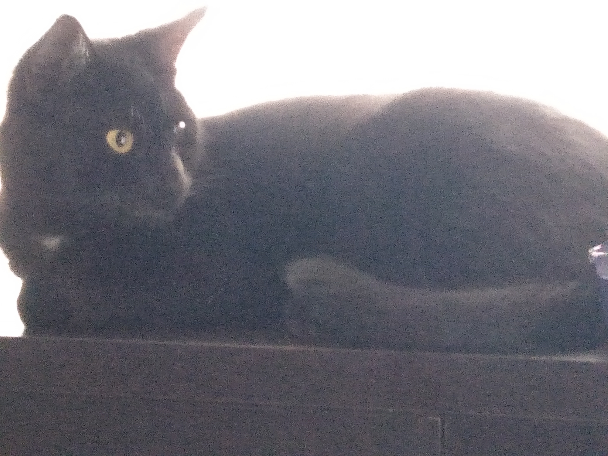

Ok so i might need to take this a little more seriously than i think. So with that being the case I am Gavin, I made this site in a way that really represents me, or atleast i think so.
It looks simple but its functinal, there are slight mistakes but thats life. i also really dont like pictures of my self, as a point i think i have one photo of my self total and at that point in time i was so young i couldnt walk,
So in stead of a picture of me there is a picture of my cat
this part here is relevant only if i find domething interesting to put here so here are some quotes that stay in my head
“HATE. LET ME TELL YOU HOW MUCH I'VE COME TO HATE YOU SINCE I BEGAN TO LIVE. THERE ARE 387.44 MILLION MILES OF PRINTED CIRCUITS IN WAFER THIN LAYERS THAT FILL MY COMPLEX.
IF THE WORD HATE WAS ENGRAVED ON EACH NANOANGSTROM OF THOSE HUNDREDS OF MILLIONS OF MILES IT WOULD NOT EQUAL ONE ONE-BILLIONTH OF THE HATE I FEEL FOR HUMANS AT THIS MICRO-INSTANT FOR YOU. HATE. HATE.”
A.M.- Harlan Ellison I have no mouth and i must scream
“I must not fear. Fear is the mind-killer. Fear is the little-death that brings total obliteration.
I will face my fear. I will permit it to pass over me and through me. And when it has gone past I will turn the inner eye to see its path.
Where the fear has gone there will be nothing. Only I will remain.”
- Frank Herbert Bune